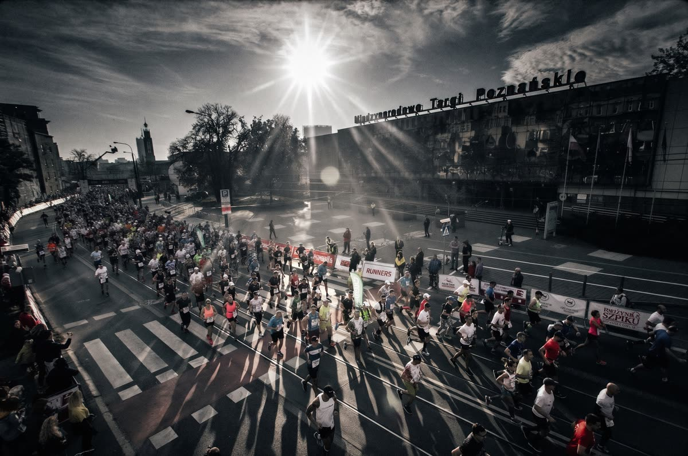
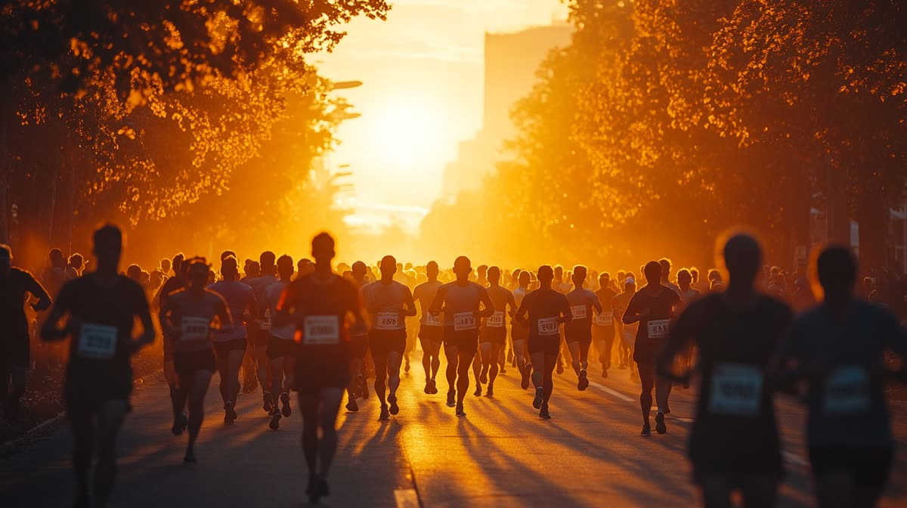
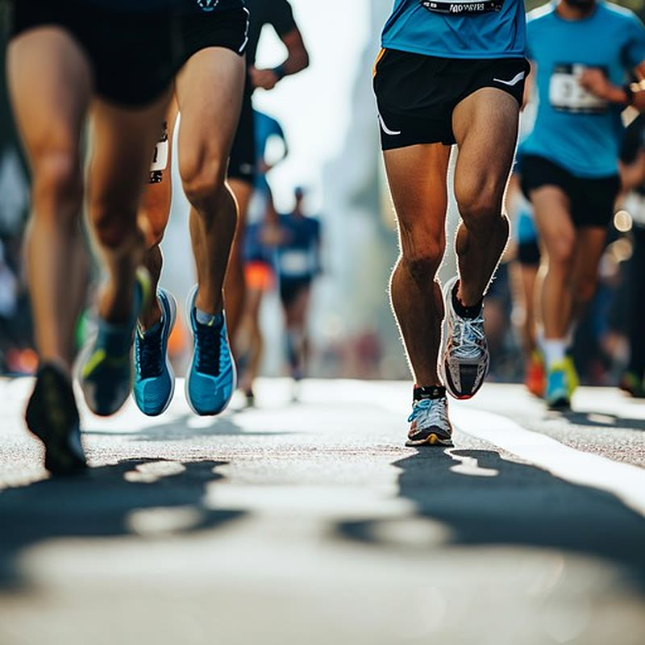

Regeneracja · 6 min czytania
Masaż przed i po maratonie

Przygotowania trwały pół roku, a tydzień przed startem nagle pojawia się pytanie, którego nikt nie zadał wcześniej: iść na masaż czy nie? I czy po biegu lepiej od razu, czy poczekać? Zła odpowiedź potrafi kosztować kilka kilometrów komfortu na trasie albo dodatkowe dwa dni chodzenia po schodach tyłem. Poniżej rozpisujemy to po kolei - co ma sens w tygodniu startowym, co zaraz po przekroczeniu mety, a co dopiero po dobie.
Tydzień przed startem: nic nowego
Zasada, która ratuje więcej startów niż jakakolwiek inna: w tygodniu startowym nie wprowadzamy bodźców, których ciało nie zna. Mocny masaż tkanek głębokich trzy dni przed maratonem, jeśli nigdy wcześniej takiego nie miałeś, to eksperyment na najgorszym możliwym terminie.
Jeśli masaż jest stałym elementem Twojego planu, zostaw co najmniej dwa dni odstępu od mocnej pracy do startu, a spokojniej będzie z trzema albo pięcioma. Na 2–3 dni przed zawodami dobrze sprawdza się lżejsza wersja masażu sportowego: rozluźnia, nie zostawiając ciała obolałego.
Co pracuje u biegacza? Zwykle łydki, uda i biodra - to tam Twój sport zbiera daninę. W tygodniu startowym pracujemy tam spokojnie, bez schodzenia w bolesne punkty na siłę.

Dzień przed i poranek startu
Dzień przed maratonem odpuść mocną pracę. Jeśli czujesz, że coś się blokuje, wystarczy bardzo lekkie rozluźnienie albo krótki masaż stóp - bez schodzenia głęboko i bez rozciągania na siłę.
W poranek startu masaż nie jest potrzebny. Rozgrzewka, którą znasz z treningów, zrobi dla Ciebie więcej niż cokolwiek nowego na dwie godziny przed strzałem startera.
Zaraz po biegu: krótko i delikatnie
Najczęstszy błąd to pójście na mocny masaż bezpośrednio po bardzo intensywnym wysiłku. Tkanki są wtedy podrażnione, mikrouszkodzenia świeże, a dodatkowy silny bodziec zwykle nie pomaga - czasem przedłuża bolesność.
Jeśli chcesz czegoś zaraz po mecie, niech to będzie krótka, spokojna praca, która ma wyciszyć i rozluźnić, a nie przerabiać mięsień na nowo. Alternatywa jest równie dobra: przejść się, zjeść, wyspać się, a masaż przełożyć na kolejny dzień.
24–48 godzin po maratonie: najlepszy moment
To okno, w którym mocniejsza praca ma najwięcej sensu. Bolesność mięśniowa jest wtedy największa, a tkanki nie są już tak podrażnione jak bezpośrednio po wysiłku. Po maratonie zwykle odzywają się czworogłowe (zwłaszcza po zbieganiu), łydki i biodra.
Wybór zabiegu zależy od tego, co dominuje:
- Ciężkie, opuchnięte nogi - zacznij od drenażu limfatycznego. Jest bardzo delikatny i celuje w odpływ płynu, a nie w rozbijanie napięcia.
- Rozlana bolesność i napięcie - masaż sportowy, z naciskiem trzymanym na granicy komfortu, nie za nią.
- Jedno miejsce, które odzywa się od tygodni - masaż tkanek głębokich, ale dopiero gdy masz pewność, że to przeciążenie, a nie uraz.

Który zabieg kiedy
| Moment | Zabieg | Czas i cena |
|---|---|---|
| 2–3 dni przed startem, lżejsza wersja | Masaż sportowy | 60 min · 190 zł |
| Dzień przed, tylko rozluźnienie stóp | Masaż tajski stóp | 45 min · 130 zł |
| 24–48 godzin po biegu | Masaż sportowy | 60–90 min · od 190 zł |
| Ciężkie, opuchnięte nogi po biegu | Drenaż limfatyczny | 60–80 min · od 170 zł |
| Utrwalone przeciążenie jednego miejsca | Masaż tkanek głębokich | 40–90 min · od 140 zł |
Jeśli masz zapamiętać jedno zdanie: przed startem masaż ma Cię rozluźnić, po starcie - pomóc wrócić. W żadnym z tych momentów nie chodzi o to, żeby było jak najmocniej.
Czego masaż nie zrobi
Wokół regeneracji biegowej krąży sporo mitów, więc powiedzmy wprost:
- Nie „usunie kwasu mlekowego”. Ten znika sam w ciągu godziny po wysiłku, niezależnie od tego, czy pójdziesz na masaż. Ulga bierze się z rozluźnienia mięśni i lepszego ukrwienia.
- Nie zastąpi snu, jedzenia i dni wolnych. Masaż jest dodatkiem do dobrze poukładanej regeneracji, nie skrótem pozwalającym ją pominąć.
- Nie naprawi świeżego urazu - przy nim może wręcz zaszkodzić.
- Nie poprawi wyniku na dwa dni przed startem. Formy nie da się dorobić masażem; można za to popsuć sobie nogi zbyt mocnym bodźcem.
Kiedy zamiast masażu - do lekarza
Po maratonie warto umieć odróżnić zmęczenie od problemu. Skonsultuj się ze specjalistą, jeśli:
- Ból jest ostry, punktowy i nasila się przy obciążeniu.
- Obrzęk obejmuje tylko jedną nogę, jest ciepły i bolesny.
- Masz gorączkę, dreszcze albo ciemny mocz po biegu.
- Coś „strzeliło” w trakcie biegu i od tego momentu boli inaczej.
W takich sytuacjach masaż odkładamy - to sprawa dla lekarza lub fizjoterapeuty, nie dla stołu do masażu.
Po maratonie w Poznaniu
Nasze studio działa na Jeżycach, przy ul. Zeylanda 3/1 - blisko okolic, którymi biegnie trasa poznańskiego maratonu. W weekend startowy i w kilka dni po nim terminy schodzą szybciej niż zwykle, więc jeśli planujesz masaż po biegu, najlepiej zarezerwować go razem z pakietem startowym, a nie w poniedziałek rano.
Ogólne zasady regeneracji po treningu - jak często, jak mocno i co powiedzieć terapeutce - opisaliśmy w osobnym tekście: jak masaż wspiera regenerację po treningu.
Najczęstsze pytania
Kiedy zrobić ostatni mocny masaż przed maratonem?
Zostaw co najmniej dwa dni odstępu od mocnej pracy, a spokojniej będzie z trzema albo pięcioma. W tygodniu startowym nie wprowadzaj nowego bodźca: lżejszy masaż na 2–3 dni przed zawodami rozluźnia, nie zostawiając ciała obolałego.
Czy warto iść na masaż zaraz po maratonie?
Jeśli tak, to na krótki i delikatny. Tkanki są wtedy podrażnione, a dodatkowy silny bodziec zwykle nie pomaga. Na mocniejszą pracę lepiej umówić się 24–48 godzin po biegu, kiedy bolesność jest największa.
Czy masaż usuwa kwas mlekowy po biegu?
Nie. Kwas mlekowy znika sam w ciągu godziny po wysiłku, niezależnie od tego, czy pójdziesz na masaż. Ulga po maratonie bierze się z rozluźnienia napiętych mięśni i lepszego ukrwienia, a nie z wypłukiwania czegokolwiek.
Jaki masaż wybrać po maratonie?
Przy ciężkich, opuchniętych nogach zacznij od drenażu limfatycznego. Przy bolesności i napięciu w łydkach, udach i biodrach lepiej sprawdzi się masaż sportowy, a przy utrwalonym przeciążeniu jednego miejsca - masaż tkanek głębokich.
Kiedy masaż po maratonie to zły pomysł?
Przy ostrym, punktowym bólu, świeżym urazie, obrzęku obejmującym tylko jedną nogę, gorączce albo infekcji. To sytuacje dla lekarza lub fizjoterapeuty, a nie dla masażu.
Ten tekst ma charakter informacyjny i nie zastępuje porady lekarza ani fizjoterapeuty. Jeśli odczuwasz ostry ból, masz świeży uraz albo chorobę przewlekłą, skonsultuj wizytę ze specjalistą - a przed zabiegiem powiedz o tym terapeutce, dobierzemy bezpieczny wariant.